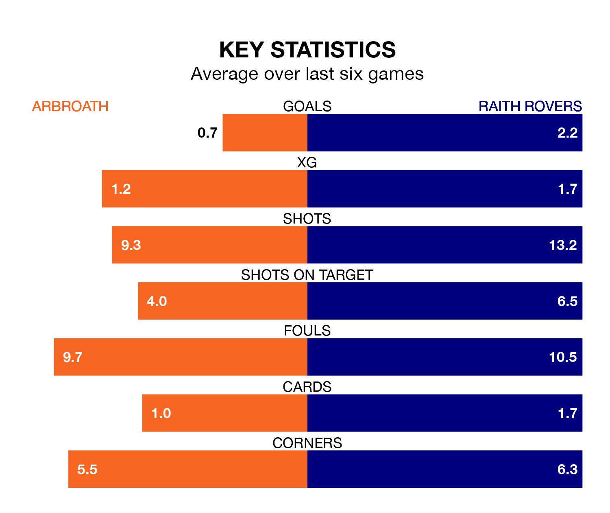

Mid-season relegation candidates Arbroath face a challenge against high-flying Raith Rovers at Gayfield Park on Wednesday.
Arbroath are ninth in the Scottish Championship table, and have picked up four wins and no draws in their 13 games to date.
Raith, meanwhile, are second in the standings with 33 points, having won 10 and drawn three of their first 14 matches, and are one point behind table-toppers Dundee United.
Arbroath are in awful form in Scottish Championship, with no wins and six losses from their last six games.
With five wins and a draw over that period, Raith's form is much better – they have taken 16 points from 18, compared to the hosts' zero.
With 26 goals in 14 games so far this season, Rovers are the league's third-highest scorers with 1.9 goals per game. And they are conceding fewer than average, letting in 17 goals at a rate of 1.2 per game.
Arbroath, meanwhile, are below average scorers, with 1.3 goals per game, compared to a league average of 1.5. They have conceded 2.1 goals per game.
In Derek Gaston, Arbroath can rely on one of the league's safest pair of hands. He has kept three clean sheets in his 13 appearances this season, and only one other 'keeper – Dundee United's Jack Walton – has been able to prevent the opposition scoring on more occasions in Scottish Championship.
In the away side's net, Maciej Dabrowski also has three clean sheets in 14 games.
In the last five years, Arbroath and Raith have played each other on 14 occasions. Arbroath won three of them, Raith five, and they drew six times.
On average, Arbroath scored 1.1 goals and Raith 1.4 in those matches.
Their last meeting was on April 15, when they played out a 1-1 draw.
Arbroath's last match was on Saturday, a 2-1 loss against Greenock Morton, with David Gold getting the goal for Arbroath.
Raith beat Partick Thistle 4-3 last time out, on Friday, with Callum Smith, Daniel O'Reilly, Dylan Easton and Sam Stanton on the scoresheet.
